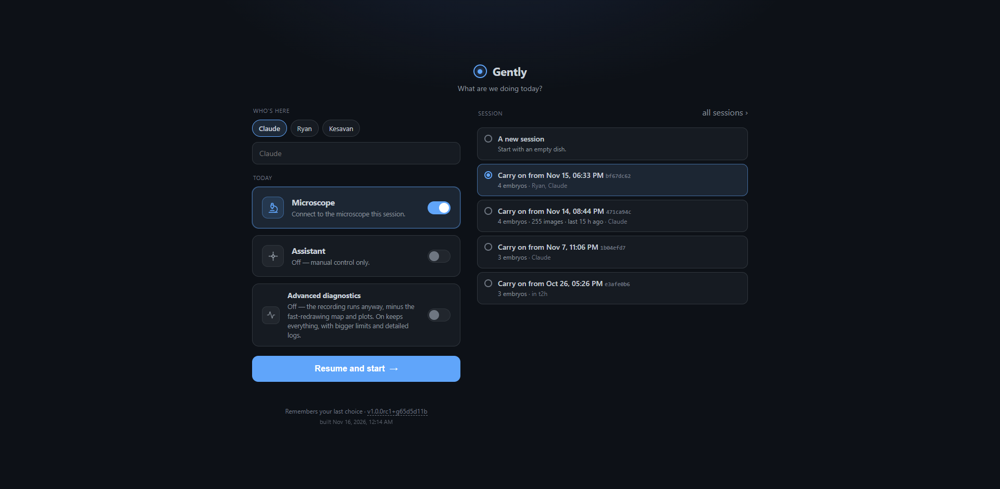
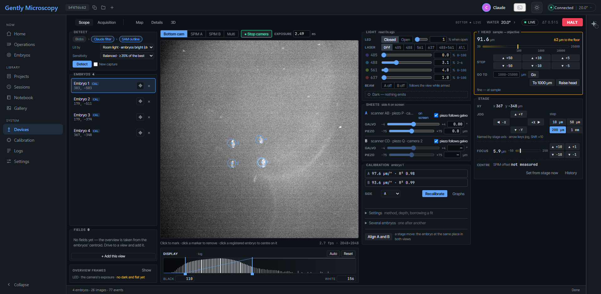
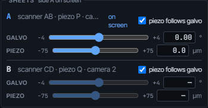
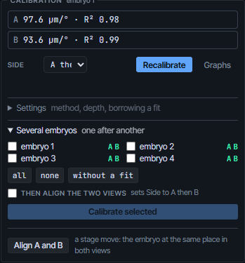
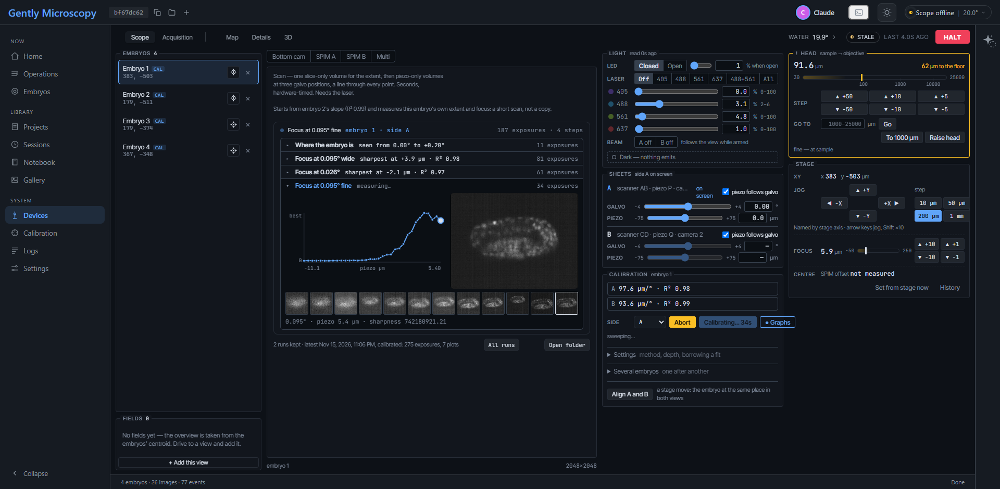
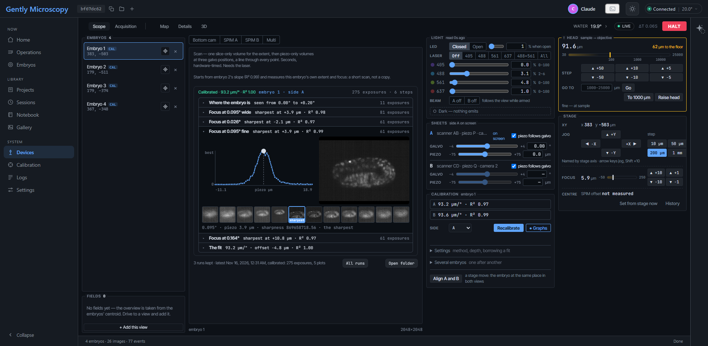
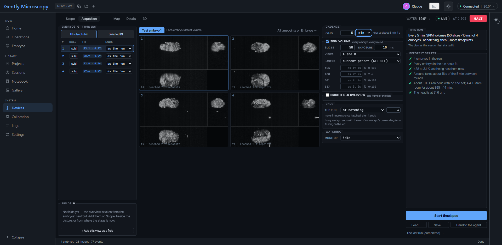
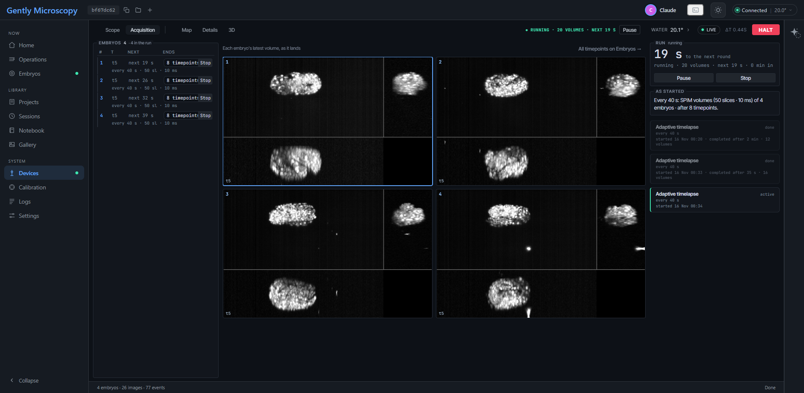
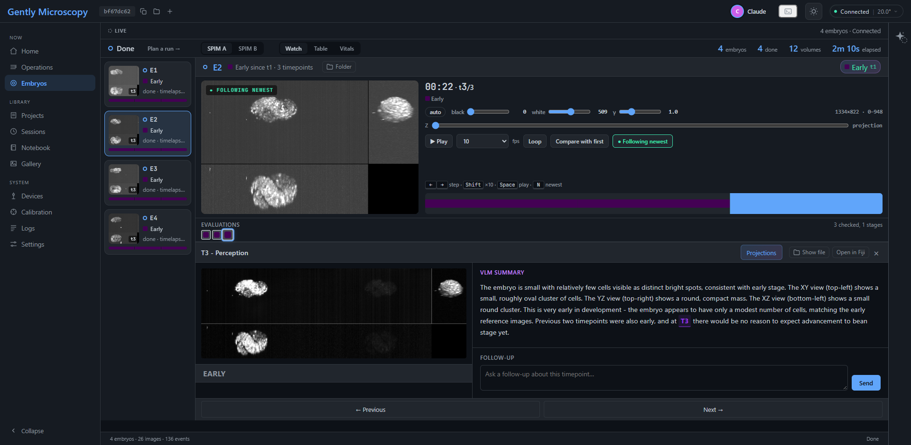
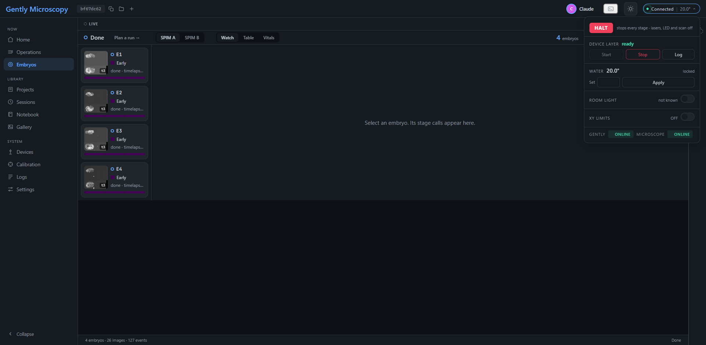

This guide takes you from an empty dish to a running two-view timelapse on the diSPIM: starting a session, finding embryos, calibrating both light sheets, planning the run, and watching it. It also points out the features worth knowing about along the way.
Gently is one window. The bar on the left chooses the page; the strip at the top right is the instrument.
| Page | What it is for |
|---|---|
| Home | Recent sessions (with Resume), projects, recent images, and notes from the lab notebook. |
| Devices › Scope | The instrument: the cameras, embryo detection, light, the two sheets, calibration, the head and the stage. Most of setting up happens here. |
| Devices › Acquisition | The plan for a run, the checks before it starts, Start, and the run as it goes. |
| Embryos | Every timepoint of every embryo: projections for SPIM A and SPIM B, playback, and what perception said about each one. |
| Calibration | The archive: every calibration run this session kept, every exposure, and the graphs. |
| Sessions, Projects, Notebook, Gallery | The library: past sessions, the projects they belong to, shared notes (you can @mention a person or the agent), and images. |
At the top right: who is at the rig, the theme switch, and the Connected chip. The chip says whether Gently and the microscope are both up, shows the water temperature, and opens the rig menu (section 9). On the Devices page the red HALT button is always in the top right corner.

http://localhost:8080 if it is already running).Go to Devices › Scope. The strip above the picture chooses the camera: Bottom cam (the overview), SPIM A, SPIM B and Multi (both sides in one frame, A red and B green).

The Light panel is the one place the LED and the lasers are set.

The instrument has two light sheets. A is scanner AB, piezo P, camera 1. B is scanner CD, piezo Q, camera 2. Each side has a galvo (the sheet's angle) and a piezo (the detection plane). Drag the line or type the number. Moving a side's sheet puts that side on screen.
Once the selected embryo has a fit on a side, that side shows a tick box, piezo follows galvo. With it ticked, moving the galvo moves the piezo along the embryo's calibration line, so the picture stays in focus as you walk the sheet through the embryo. If you then nudge the piezo yourself, the difference is kept as a trim and shown beside the tick box; clear puts it back on the line. Untick it to move the two independently.
A calibration measures, for one embryo and one side, where the embryo is along the galvo and which piezo position is in focus at each galvo angle. The result is a line: a slope in µm per degree and an offset. A two-view run needs that line for side A and side B of every embryo.

While it runs, the camera area becomes the run itself: a list of steps, one open at a time.

| Step | What it is doing, and what its line says when done |
|---|---|
| Where the embryo is | A sweep of the galvo to find the angles the embryo is lit at. "seen from +0.10° to +0.20°". |
| Finding the focus | A first look for the focal plane, chosen from a montage. "picked D by vision". |
| Focus at 0.150° wide / fine | A piezo sweep with the sheet held at one angle. A wide look first, then a fine one. "sharpest at +10.8 µm · R² 1.00". |
| The fit | The line through the sharpest piezo at each angle. "102.0 µm/° · offset −4.9 µm · R² 0.99". |

Go to Devices › Acquisition. Left: who is in the run. Middle: each embryo's latest volume. Right: the plan, what it adds up to, and the checks.

| Setting | What to choose |
|---|---|
| Embryos | All subjects or Selected. Each row shows the embryo's fit and can have its own ending. |
| Cadence | How often a round starts, in seconds or minutes. Beside it is what the cadence will really be once the time a round takes is counted. |
| SPIM volume | Slices and exposure per stack. |
| Views | A and B for two-view imaging. Every round, each embryo gets a stack from side A and then from side B, about three seconds apart. |
| Lasers | "current preset" uses the lines as they are routed on Scope. Powers can be set per line, or left "as it is". |
| Brightfield overview | Optional: one bottom-camera frame of the field each round. |
| Ends | Until stopped, after N timepoints, after N hours, at hatching, at comma stage, or when every test embryo has hatched. |
| Watching | The monitoring mode the agent applies during the run. |
Choose at hatching and a number appears beside it: how many more timepoints to take once the embryo has hatched. It starts at 3. Those extra frames show the empty shell and confirm the hatch; set it to 0 to stop at once. The plan's sentence reads it back: "at hatching, then 3 more timepoints".
Between the plan and the Start button is a list titled Before it starts. It is worked out from what the page already knows, and it updates as you change the plan. A tick is fine, an exclamation mark is worth knowing, and a cross is in the way: Start will not run past a cross.
| A line like | Tells you |
|---|---|
| "4 embryos in the run." | Who will be imaged. If nobody: whether there are no embryos, none selected, or all marked as references. |
| "Every embryo in the run has a fit." | Calibration. If some have none, it names them and offers a button to calibrate them. |
| "488 at 3.1 %, as the rig has them now." | The light the stacks will be taken under. With no line routed it warns that the volumes would be dark. A run is refused if a line was left above 10 % by hand and the plan does not set it. |
| "A round takes about 16 s of the 5 min between rounds." | Whether the cadence can be kept with this many embryos, slices and views. |
| "About 5.0 GB an hour … 4.4 TB free: room for about 893 h." | How much disk the run will use and whether it fits. |
| "The head is at 91.6 µm." | That the head is down at the sample. |
| "The microscope is offline …" | Nothing can be imaged until it is connected. |


On Embryos, select an embryo to see every timepoint: play them as a movie, compare with the first, switch between SPIM A and SPIM B, open the folder, or open a stack in Fiji. The coloured bar is the embryo's developmental stage over time, as judged from each volume. That judgement is what "at hatching" waits for.
HALT is the emergency stop. It is on the Devices page's top right corner and at the top of the rig menu, and it never asks whether you have control.
One press:
It works during a stack or a stage move: it has its own line to the microscope that does not wait for whatever is running. The message afterwards names what stopped, and names anything that did not.

Everything is ordinary files under D:\Gently3. There is no database. One session is one folder:
D:\Gently3\sessions\20261115_1833_unnamed_bf67dc62\
session.yaml who, when, which project
acquisition.yaml the plan the run was started with
embryos\embryo_2\
embryo.yaml position, and the calibration for A and for B
calibration\20261115_233058\ one calibration run: every exposure, its scores, its plots
volumes\t0001.tif side A's stack, timepoint 1
volumes\t0001.meta.yaml shape, when it was taken (local and UTC), settings
volumes\B\t0001.tif side B's stack of the same timepoint
projections\t0001.jpg what the pages show
traces\t0001.json what perception said about it
removed\... an embryo taken off the list, kept whole and restorable
volumes\ and side B's are beside them in volumes\B\, under the same timepoint numbers..meta.yaml says when it was acquired. In a two-view round, B's time is a few seconds after A's..was_… name.D:\Gently3\logs: gently_*.log for the app and device_layer_*.log for the hardware.| You see | Do this |
|---|---|
| The chip says "Scope offline" | Open the rig menu and Start the device layer, then wait for "Connected". The checks before a run will say the microscope is offline until then. |
| A SPIM view says "not embryo N" | The stage is not at that embryo. Press the target button on its row to go there. The view still works where it is. |
| Multi shows nothing | Start the view; Multi needs a line routed and both sides' sheets where their embryos are. |
| One side's fit is far from the other's | Open Graphs for that embryo and look at that side's sweeps. No embryo in the exposures means it was out of that side's view: Align A and B, or re-centre and calibrate that side again. |
| Start is refused for laser power | A line is above 10 % and the plan does not set it. Lower it in Light, or set that line's power in the plan. |
| Something is moving or lit that should not be | HALT. Then read what it says stopped. |
Gently is developed at github.com/gently-project/gently. This guide lives in the repository at docs/guide/; regenerate the PDF from the HTML when the screens change. A four-minute video of the same steps on the simulated rig is beside it: Gently-two-view-walkthrough.mp4.